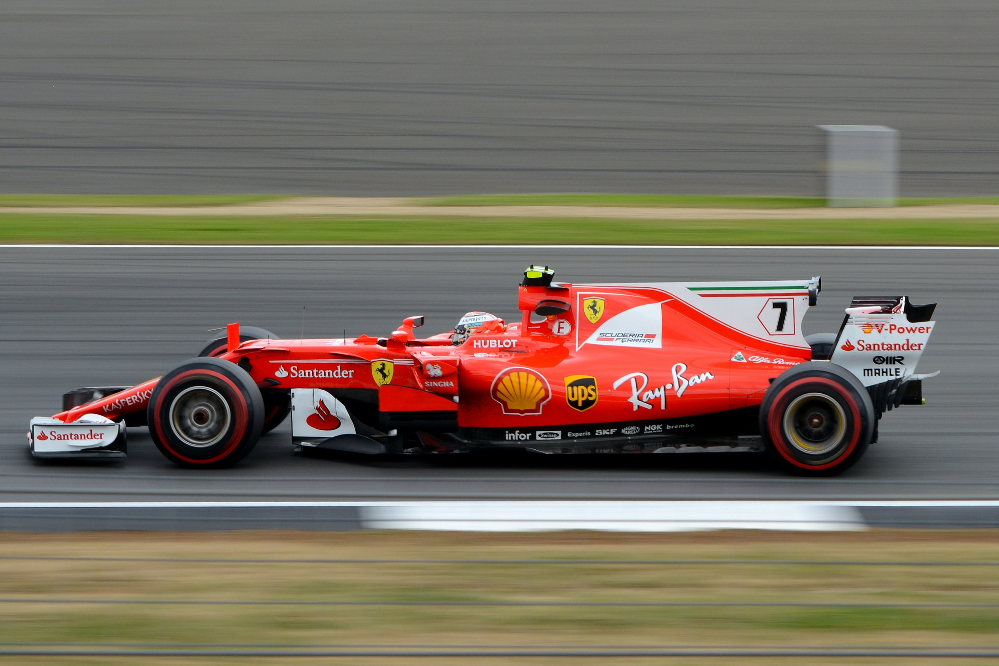

Ferrari in Formula 1
Ferrari's full name is Scuederia Ferrari Marlboro. This is the division of Ferrari concerned with racing. Scuderia is Italian for "Stable", and Ferrari is the name of its founder.
The prancing horse was the symbol on Italian World War I ace Francesco Baracca's fighter plane, and became the logo of Ferrari after the fallen ace's parents, good friends with
Enzo Ferrari, asked him so, to continue his tradition of sportsmanship, gallantry and boldness.
Scuderia Ferrari was founded in 1929, and raced for Alfa Romeo until 1939. Ferrari first competed in F1 in 1948 (the team's first F1 car was the Tipo 125 F1), making it the oldest
and arguably the most successful team left in the championship.
One of the most popular Ferrari drivers was Michael Schumacher, who won five titles with Ferrari. He drove in this team from 1997 through 2006. Schumacher worked with Ferrari in a
consulting role after he quit driving. In 2007, Kimi Räikkönen won the Driving Championship for Ferrari. In 2008 Felipe Massa lost the Championship Title to Lewis Hamilton by one point. Ferrari won the Constructors Championship in 2007 and 2008.
